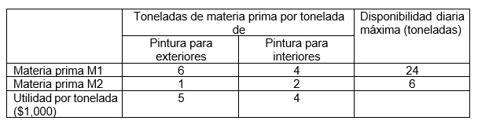
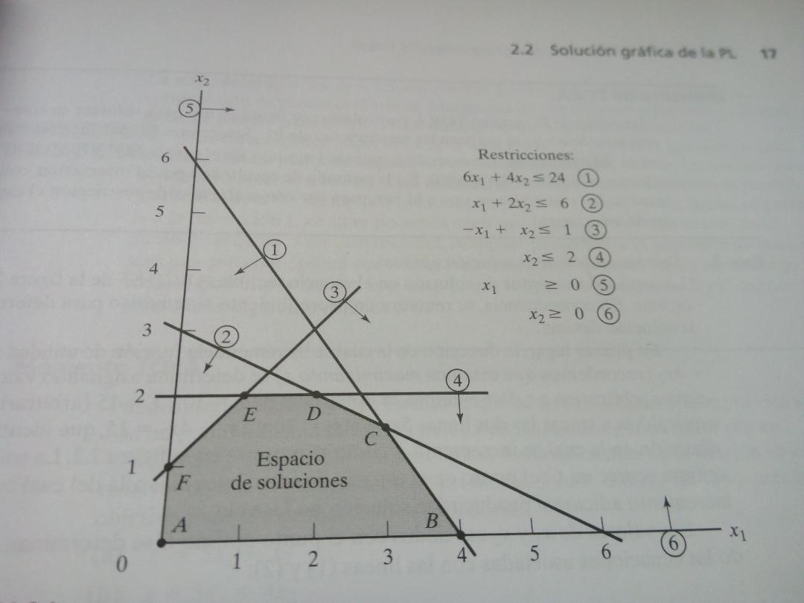

2.4.1 Determinación de la región factible y la solución óptima.
Para resolver un modelo de optimización por el método gráfico, primero se hace la gráfica de la región que representan las restricciones, a la que se le llama región factible, posteriormente se hace la gráfica de la función objetivo y se comienza a desplazar por la región factible hasta obtener una solución óptima.
Ejemplo problema de maximizar:
Reddy Mikks produce pinturas para interiores y exteriores con dos materias primas M1 y M2. La tabla siguiente proporciona los datos básicos del problema.

Elaboración propia
Una encuesta de mercado indica que la demanda diaria de pintura para interiores no puede exceder la de pintura para exteriores en más de una tonelada. Asimismo, que la demanda diaria máxima de pintura para interiores es de dos toneladas.
Reddy Mikks se propone determinar la mejor combinación óptima de pinturas para interiores y exteriores que maximice la utilidad diaria total [18].
1.- Formulación del problema
Describir el objetivo El objetivo de Reddy Mikks es maximizar la contribución total a la ganancia.
Describir cada restricción Cuatro restricciones limitan la cantidad de toneladas diarias de pintura que pueden producirse.
Restricción 1: La disponibilidad diaria máxima de materia prima M1 es de 24 toneladas.
Restricción 2: La disponibilidad diaria máxima de materia prima M2 es de 6 toneladas.
Restricción 3: La producción diaria de pintura para interiores no debe exceder a la de pintura para exteriores en más de una tonelada.
Restricción 4: La demanda diaria de pintura para interiores es de 2 toneladas.
Las variables de decisión son entradas controlables en el problema. Para el problema de Reddy Mikks las dos variables de decisión son:
X1= toneladas producidas diariamente de pintura para exteriores.
X2= toneladas producidas diariamente de pintura para interiores.
Función objetivo:
Max Z = 5X1 + 4X2
2.- Construcción del modelo matemático:
Max Z = 5X1 + 4X2
Sujeto a
6X1 + 4X2 ≤24 Materia prima M1
X1 + 2X2 ≤ 6 Materia prima M2
-X1 + X2 ≤ 1 Producción de ambas pinturas
X2 ≤ 2 Demanda diaria de pintura para interiores
X1, X2 ≥ 0
Obtención de la solución óptima:

Extraído de: https://www.youtube.com/watch?v=2kI3OaV9-_o